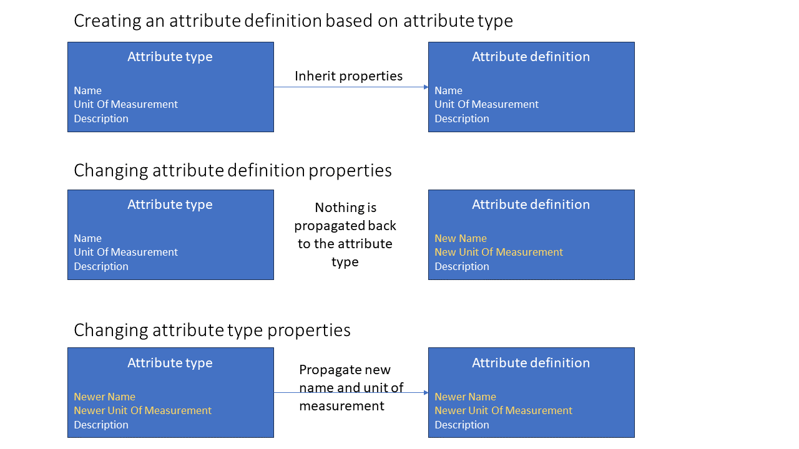

Mesh glossary
Model definition
- Model definition - Consists of object definitions, attribute types and namespaces. The model definition is also a top-level namespace.
- Object definition - Consists of attribute definitions. You can compare it to a C++ class.
-
Attribute definition - You can compare it to a C++ class member. May be based on an
attribute type(for more details refer toattribute type). Attribute definitions may be singular or an array of one of the following types:- String, boolean, int, double or UTC time. These are known as simple types.
- XY set, enumeration, rating curve or
time series attribute(time series can be a calculation or a reference to aphysical time seriesorvirtual time seriesfrom resource). These are known as complex types. - Ownership or link relation to an object definition. Refer to
relation attributesparagraph for more information.
Additionally, depending on the attribute type, the attribute definitions specify parameters like default value, accepted value ranges, etc.
Changing the name of an attribute definition will also change the names of all already existing attributes in the model to the new value.
-
Attribute type - Used for creating re-usable
attribute definitions. Once defined could be used by differentobject definitionsfor creating anattribute definitionbased on it.Every
attribute definitionthat is based on an attribute type will inherit name, description and unit of measurement (if applicable) of that attribute type. For enumeration attribute types the definitions will also inherit default value if not provided explicitly when creating the attribute definition.Updates of all above mentioned properties (name, description and unit of measurement) can be done on attribute definition level. In such case the attribute type and attribute definition may have different property values. However, there is a special way of handling changes to name and unit of measurement done on attribute type level. Updating an attribute type name or unit of measurement will update also names and unit of measurements in all attribute definitions that were created based on the given attribute type. Other properties like description will change just the property on the attribute type level. See examples below:

-
Namespace - Used for grouping and filtering purposes in a
model definition. You can compare it to a C++ namespace. Namespace may contain:- object definitions
- attribute types
- other (nested) namespaces
- Template calculation definition - Defines calculation expression that could be used by
time series attributes. - Tags - special enumeration values that can be attached to attribute types and object definitions. Similar to namespaces they are used for grouping and filtering purposes.

Model
- Model -
Model definitioninstance. - Object -
Object definitioninstance. - Attribute -
Attribute definitioninstance. Name of the attribute is inherited from attribute definition.
Resource
- Resource - Container storing data (e.g.: time series), used by
Model(s). - Physical time series - Time series data (timestamps, values and flags) and meta data (e.g.: curve type, resolution, etc.).
- Virtual time series - Has defined an expression to calculate time series data (similar to
calculation time series) but is stored in resources. - Catalog - Used for grouping and filtering purposes.
Catalogtypically containsphysical time series,virtual time seriesor othercatalogs. Similar tonamespacesinmodel definition.
Time series attributes
Time series attribute- can be a:- reference to a
physical time seriesorvirtual time seriesfrom resource calculation time series, where the expression is defined on the following levels:local expression- defined onmodelleveltemplate expression- defined onmodel definitionlevel intemplate calculation
- reference to a
Relation attributes
Objects in Mesh model can relate to each other. Relation between objects is done using relation attributes. The relation attribute defines type of the relation, target object type and other parameters.

There are two groups of relations between objects in Mesh model.
Ownership relation
Each object is owned by some other object (owner). It is called ownership relation.
Ownership relations can be:
* one-to-one
* one-to-many (collection): where value of many is in range defined by
minimum and maximum cardinality on relation attribute definition level.
By convention ownership relation attribute names start with 'has_...', e.g.: has_PowerPlant. Removing an object will remove recursively all of its owned objects as well, if there were any.
Link relation
Link relation is a relation where one object may point to another object, but does not own it. There is also a versioned link relation, which is a link relation where the target object can change over time. It consists of a list of pairs: * Target object identifier. * Timestamp which indicates start of the period where the target object is active (linked to), the target object is active until the next target object in the list, if any, becomes active.

There are four types of link relation attributes: * one-to-one * one-to-many (collection) * versioned one-to-one * versioned one-to-many (collection)
Similar to ownership relation the value of many is in range defined by
minimum and maximum cardinality on relation attribute definition level.

By convention link relation attribute names start with 'to_...', e.g.: 'to_EnergyMarket'. Removing an object that had link relations to other objects will NOT remove the linked objects.

XY curves
An XY curve is a set of (x, y) pairs where x and y are 64 bit
floating point values.
| x | y |
|---|---|
| 1 | 2 |
| 2 | 1.5 |
| 3 | 0.5 |
| 10 | -1 |
An XY set is a set of XY curves, each curve indexed by a 64 bit floating point reference value. These reference values are sometimes called Z. We often visualize XY sets like so:
| x | z y |
z y |
|---|---|---|
| 0 | 180 | |
| 2 | 1.5 | 0.3 |
| 3 | 0.5 | 1 |
| 10 | -1 | 9 |
- The first non-header row contains the reference/Z values for that column.
- Usually the headers will have actual names, see further below.
A versioned XY set is a versioned list of XY sets. Each XY set in the list has a timestamp which indicates the start of the active period for that XY set, and the XY set is active until the next time-sorted XY set in the versioned XY set becomes active.
Mesh has attribute types for XY sets (XYSetAttribute) and versioned XY
sets (XYZSeriesAttribute). In the attribute definitions of those attributes
we store a description and a unit of measurement for each of X, Y, and Z. For
example if we have the following axis definitions...
| Axis | Description | Unit of measurement |
|---|---|---|
| X | Wind speed | m/s |
| Y | Production | MW |
| Z | Wind direction | degrees |
...Nimbus will visualize the above XY set as:
| Wind speed | Wind direction Production |
Wind direction Production |
|---|---|---|
| 0 | 180 | |
| 2 | 1.5 | 0.3 |
| 3 | 0.5 | 1 |
| 10 | -1 | 9 |
Rating curves
A rating curve is used to convert water level in river measurements in
a watercourse to discharge. In Mesh we use the formula
to approximate discharge, and we store rating curves as a set of segments where
each segment contains values for the 64 bit floating point factors , ,
and . Additionally each segment stores a 64 bit floating point
x_range_until value and is valid for a range of values
[x_range_until[i-1], x_range_until[i]).
For example, with a segment...
| x_range_until | a | b | c |
|---|---|---|---|
| 10 | 1.24 | 13.7 | 11.1 |
| 50 | 11.2 | 1.0 | 6.65 |
| 100 | 4.27 | 1.55 | 0.87 |
...we'd have the following rating curve function:
Rating curves can change over time because of for example changes in a river due to erosion and sedimentation. Such changes affect the discharge function and the function equation factors need to be adjusted. To reflect that the rating curve segments in Mesh are grouped into rating curve versions. Each version is timestamped with the time at which the version becomes active, and the version is active until the next version, if any, becomes active.
| version | x_range_until | a | b | c |
|---|---|---|---|---|
| 2019 | 10 | 1.24 | 13.7 | 11.1 |
| 2019 | 50 | 11.2 | 1.0 | 6.65 |
| 2019 | 100 | 4.27 | 1.55 | 0.87 |
| 2020 | 10 | 3.31 | 11.7 | 12.1 |
| 2020 | 50 | 10.1 | 1.5 | 5.45 |
| 2020 | 100 | 5.00 | 1.32 | 0.96 |
| 2021 | 10 | 2.22 | 12.7 | 10.1 |
| 2021 | 50 | 11.1 | 1.3 | 5.65 |
| 2021 | 100 | 3.27 | 2.55 | 0.37 |
In addition each version has an x_range_from field, with the minimal $x$ value
for the curve. For x < x_range_from for the given version the f(x) = nan.
In Mesh rating curve attributes contain a set of rating curve versions.
Extended metadata
Extended metadata is an additional and optional information that can be set on: - Namespaces and model definition (which is also a namespace) - Attribute definitions - Object definitions
It is a list of key-value pairs: category name and a JSON object. Maximum size of the JSON object serialized to a string is 4000 characters.
If a given attribute definition, object definition or namespace has more than one extended metadata, then the category names must be unique.
For example, an object definition may have 2 extended metadata entries:
* Category name MyCategory1 with associated JSON object:
{
"Labels" : ["Label A","Label B"],
"Something" : {"MaxValue":100}
}
- Category name
MyCategory2with associated JSON object:
{
"Active": true
}
Mapping
From now on it is strongly advised to use new definitions, but some of them were already known under different names:
- Model definition - object model, meta model, repository (in Mesh Explorer)
- Object definition - element type, object type (in Mesh Configurator)
- Model - physical model
- Object - physical object
- Attribute - property
- Versioned XY set -
XYZSeries